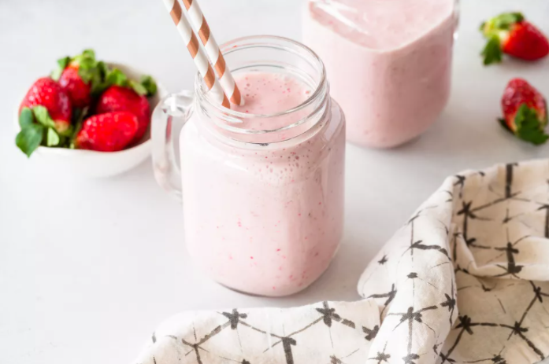

While it’s not necessary to soak the strawberries in the sugar before blending, the sugar really pulls out the berries’ natural juice and intensifies the sweetness in a way that gives your milkshake amazing flavor. You could also use strawberry ice cream instead of vanilla for even more strawberry punch.
With a bit of cookie crunch, rich chocolate sauce, and creamy texture, it's no wonder that people are so fond of this flavorful Oreo milkshake. Serve with a colorful straw.
Nothing beats a creamy, thick chocolate shake alongside a nice burger and fries. But you don't have to go to a fast-food joint to get a great milkshake. With only three ingredients (milk, ice cream, and chocolate syrup) our chocolate milkshake is an exceptional treat, topped with a nice dollop of whipped cream.
Everyone's had the classic chocolate shake, but a peanut butter shake? It's sweet and a little salty and definitely not something you get every day. It is so simple to make, so satisfying, and you probably already have everything you need to make this beautiful concoction. Deck it out with crazy toppings like toasted marshmallows, hot fudge, sprinkles, or crushed peanut butter cookies.